Reescrita cos(...)^2 => cos^2(...)¶
Como mostra o exemplo do título tem-se, por vezes, a necessidade de reescrever uma expressão numa outra equivalente mas de aspeto mais familiar, convencional ou simplesmente mais “amiga” dos nossos olhos:
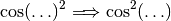
O autor dum exercício pode escrever no texto que produz a expressão 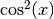 diretamente em vez de 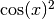. Portanto, o problema que se descreve nesta secção só surge quando se pretende visualizar o resultado de um cálculo automático.
O Sage Mathematics (ou outro sistema algébrico) foi programado com uma única maneira de apresentar expressões e que muitas vezes não coincidem com a maneira de uma particular escola portuguesa ou simplesmente não apresenta os resultados da maneira mais elegante para um estudante novo na matemática.
Alguns casos são comuns:
- 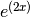 devia ser apenas 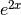
 pode ser representado por 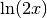
pode ser representado por 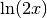- 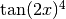 pode ser melhor representado por 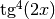
Temos duas abordagens. No instante em que uma expressão
é calculada (na parte def solve()) podemos, com algum trabalho moroso, (re-)construir uma string
a ser visualizada após esse cálculo.
Mas a maneira padronizada no MEGUA é criar uma rotina rewrite que exista a par com o make_random e solve. Segue-se um exemplo:
def rewrite(s,texto_entrada):
#1. Esta parte depende do que queremos alterar:
modificacoes = [
( ur'dx x y' , ur'x y dx' ),
( ur'\\tan' , ur'\text{tg}' ),
( ur'e\^\{\\left\((.+?)\\right\)\}' , ur'e^{\1}' ),
( ur'\\sin\\left\(([\d\\, t]+?)\\right\)\^\{2\}' , ur'\sin^2(\1)' ),
]
#2. Esta parte é sempre a mesma.
texto = texto_entrada
for m in modificacoes:
texto = re.sub( m[0], m[1], text, re.U )
return texto
Comenta-se de seguida o algoritmo e cada uma das substituições mencionadas em modificacoes.
Antes de tudo, os parâmetros são substituídos pelos valores aleatórios e pelas expressões calculadas em make_random e solve.
Depois, uma função rewrite, como a acima ilustrada, segue a seguinte ideia simples:
- Definem-se as regras de conversão de expressões.
- Percorre-se e transforma-se todo o texto para cada regra (em que cada regra é aplicada ao texto já transformado pelas regras anteriores).
Resta assim apresentar como se definem as regras de conversão. Estas regrdas são definidas usando
“expressões regulares,” termo proveniente da computação.
Este tema não pode ser apresentado numa curta secção pelo que apenas se ilustram
os casos simples apresentados na função rewrite descrita acima.
Cada regra tem duas componentes: a expressão a ser encontrada e a nova expressão que tomará o lugar da primeira. As letras ur` devem aparecer sempre sem entrar em detalhes (o que são as letras ur?).
Primeira regra
procurar: substituir por:
dx x y x y dx
Nesta primeira regra é descrita a transformação intuitiva: onde está ‘dx x y’ deve estar ‘x y dx’ pois é mais frequente, quando se ensina a primitivar, que o ‘dx’ esteja no final da integração.
Segunda regra
procurar: substituir por:
\\tan \text{tg}
Explica-se de seguida porque se vê \\tan e não apenas \tan.
A segunda regra transforma todas as ocorrências de \tan em \text{tg}. No contexto das
expressões regulares cada símbolo na lista \^{}() tem um significado especial.
Por outro lado, estes mesmos símbolos, são plenamente usados em LaTeX. Este conflito
é resolvido precedendo cada um deles com \ (incluindo o próprio \!).
Assim, para encontrar \tan temos que indicar \\tan porque \\
equivale a procurar por \.
No segundo membro da regra já não é necessário usar \ e usa-se \text{tg} indicando que tg não deve estar
em itálico (faça a experiência de tirar o \text).
Terceira regra
procurar: substituir por:
e\^\{\\left\((.+?)\\right\)\} e^{\1}
Tratamos o caso duma exponencial: deve ser apenas .
Para se apresentar esta terceira regra tira-se o \ extra para simplicidade de leitura
ficando com:
procurar: substituir por:
e^{\left((.+?)\right)} e^{ \1 }
Recorda-se do LaTeX que \left( e \right) indicam um par de parentesis
que cresce consoante a altura da fórmula. Vamos supor, para apresentar este exemplo,
que, para o resultado final, o tamanho é fixo e então não precisamos
de \left ou \right.
Restam dois símbolos novos: (.+?) no lado esquerdo e \1 no lado direito.
No primeiro é feita uma recolha de tudo o que ocorre entre \left( e \right)
e é-lhe dado o nome de \1. Ou seja, o lado direito da regra e^{ \1 } reproduz em \1 o que foi
encontrado entre \left( e \right) mas agora sem o par de parentesis.
As chavetas no LaTeX não aparecem mas são necessárias para indicar que tudo o que nelas
está contido fica em “super-escrito”.
Quarta regra
procurar: substituir por:
\\sin\\left\(([\d\\, t]+?)\\right\)\^\{2\}' \sin^2(\1)
Esta regra transforma expressões como 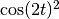 numa equivalente mas de aspeto mais usual 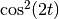. Nesta regra ocorrem símbolos novos na expressão a procurar:
[\d\\, t]: designa qualquer dígito (d), barra (\), a vírgula (,), o espaço ( ) ou ainda a letra t.[\d\\, t]+?: designa uma combinação de dígitos, barras, vírgulas, espaços ou letras t.\^: designa o símbolo ^ no LaTeX (a potência).
Portanto, tudo o que é encontrado por ([\d\\, t]+?) é representando por \1 na
expressão final onde apenas o “quadrado” muda de posição. No exemplo dado, ocorre o 2t entre
parentesis e portanto o valor de \1 é 2t.
Explicação complementar: porque não se usou apenas (.+?) em vez de ([\d\\, t]+?)?
Ao usar a forma mais genérica no seguinte exemplo:
\sin( 2t ) + \sin( 4t )^2
obteriamos \sin(, depois 2t ) + \sin( 4t, e finalmente, )^2. Isto é,
o valor de \1 seria 2t ) + \sin( 4t e não apenas 2t pois a expressão regular “procura” por um quadrado
que só existe no segundo sin.